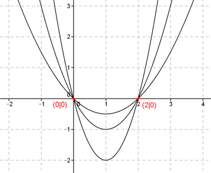

Aufgabe 9 Alle Graphen einer ganzrationalen Funktion 2. Grades gehen durch die Punkte (0|0) und (2|0) und haben an der Stelle x = 1 ein Minimum. Wie lautet die Funktionsgleichung dieser Kurvenschar? Allgemeine Form einer ganzrationalen Funktion 2. Grades: f(x) = ax² + bx + c f’(x) = 2ax + b f’’(x) = 2a 3 Bedingungen: 1. Geht durch den Punkt (0|0) bedeutet: f(0) = 0 --> a * 0² + b * 0 + c = 0 --> c = 0 2. Geht durch den Punkt (2|0) bedeutet: f(2) = 0 --> a * 2² + b * 2 + 0 = 0 --> 4a + 2b = 0 I 3. Haben an der Stelle x = 1 ein Minimum bedeutet: (a > 0) f’(1) = 0 --> 2a * 1 + b + 0 = 0 --> 2a + b = 0 II II * (-2) + I -4a - 2b = 0 4a + 2b = 0 ------------- 0 = 0 --> Lineare Abhängigkeit zwischen I und II. (I = 2 * II) 2a + b = 0 |-2a b = -2a Gesuchte Funktionsgleichung: f(x) = ax2 - 2ax a > 0 Darstellung für 3 verschiedene a. Vom Scheitelpunkt aus von unten nach oben: a1 = 2 a2 = 1 a3 = 0,5 